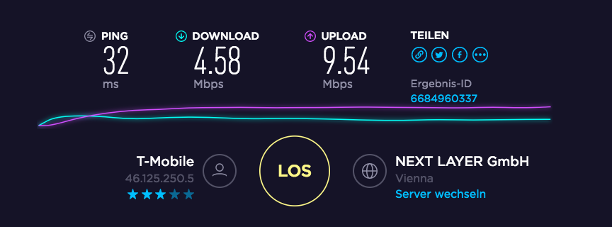

Schön langsam bin ich genauso verärgert wie andere auch. Die Meldungen häufen sich - siehe auch allestörungen.at - und decken sich auch mit meinen Beobachtungen. Wozu bezahle ich 50Mbit wenn ich die letzten Tage/Wochen immer öfter nur 4Mbit bekomme?
Ich will hier gar keine Router Standort, externe Antennen, etc. Diskussion mit euch. Der Speed hat lange Zeit gepasst, jetzt ist es aber schon lange schlecht. Ich bin derzeit sehr enttäuscht von dieser "Performance". Ich ersuche euch hier wieder die Qualität anzuheben, nicht nur Verträge zu verkaufen welche die Funkzellen füllen und der Ausbau dieser bleibt auf der Strecke. Ich kann mich an 3G Zeiten erinnern, da wars genauso.
Derzeit kann man zumindest in Wien 20 echt keine Empfehlung für dieses Produkt geben.
MfG, ein grantiger Kunde (
1.xxxxxxx)

Rene Artner
Das ist der Speed wenn ganz Wien schläft, was auch beweist, dass es wieder nur um Verträge geht und der Außbau völlig vernachlässigt wird. Ich könnt kotzen. Ich werds mit einem weiteren Screenshot heute Abend wieder belegen, wenn alle Kunden in den Zellen eingebucht sind.
Bearbeitet
von Rene Artner
Rene Artner
Sonntag Abend und jetzt kann ich noch nichtmal einen 720p Film streamen
Bitte keine privaten Daten (auch Kundennummer) in der Community veröffentlichen.
Die User der Community können dir hier mit Tipps etc. zur Seite stehen. Solltest du diese Tipps im Vorfeld schon ablehnen,
Am 6.10.2017 um 20:47 schrieb Rene Artner:
Ich will hier gar keine Router Standort, externe Antennen, etc. Diskussion mit euch.
so ist die Community ev. der falsche Ort für dein Anliegen.
Wir nehmen Beispiele aus der Praxis aber immer gerne entgegen.
Allgemein kann ich hier nur sagen, dass wir keine aktuelle Beeinträchtigung im 20. Bezirk gemeldet haben und die
Bandbreitenoptimierung
hier eine Ursache sein kann.
Mobiles Internet ist ein Shared-Medium und hier können durchaus Schwankungen vorkommen. Grundsätzlich beobachten wir auch unser Netz und setzen Maßnahmen (Erweiterung, Ausbau), die den Schwankungen entgegentreten.
Da für eine detaillierte Analyse deine privaten Daten notwendig sind, können wir diese in der Community nicht anbieten.
LG Phil
Rene Artner
vor 10 Stunden schrieb Phil:
Allgemein kann ich hier nur sagen, dass wir keine aktuelle Beeinträchtigung im 20. Bezirk gemeldet haben und die
Bandbreitenoptimierung
hier eine Ursache sein kann.
Mobiles Internet ist ein Shared-Medium und hier können durchaus Schwankungen vorkommen. Grundsätzlich beobachten wir auch unser Netz und setzen Maßnahmen (Erweiterung, Ausbau), die den Schwankungen entgegentreten.
LG Phil
Lieber Phil!
Bitte erzähl mir nicht, dass es in Wien 20 keine Beeinträchtigung gibt und Bandbreitenoptimierung ist ja lediglich ein Schönreden völlig ausgebuchter Funkzellen was einfach ein Versäumnis des Netzausbaus bedeutet. Aber das ist euch ja egal, hier werden Kunden einfach in die Irre geführt. Ich bezahle 50 Mbit und bekomme aktuell wieder nur 4.88 Mbit geliefert, das sind nichtmal 10% der Leistung die ihr mir verrechnet! Bekomme ich jetzt Geld zurück?
Kathi
Hallo Rene Artner,
man kann wirklich nicht von einem ganzen Bezirk reden. Ein Teil von uns ist ja auch in Wien zu Hause und wir nutzen ebenfalls T-Mobile Produkte. Ich habe bei mir zu Hause einen Würfel und mein Handy. Ich fahre jeden Tag durch den 20. Bezirk. Bin auch immer wieder mal dort unterwegs und konnte selbst keine Einschränkungen feststellen. Gut, zum einen bin ich natürlich mit meinem Handy dort und zum anderen streame ich keine großen Daten (Filme, Musik).
Wir führen unsere KundInnen bestimmt nicht in die Irre. Es gibt eine Testzeit, in der man alles auf Herz und Nieren prüfen kann. Wenn nach dieser Zeit umliegend mehr KundInnen hinzukommen, können wir das zuvor nicht wissen. Aber wir arbeiten stets daran, dass gerade Zellen, die einen deutlichen Anstieg an Nutzer verzeichnen und somit die Bandbreite vermehrt geteilt wird, natürlich auch erweitert werden. Solche Erweiterungen sind aber an wirklich viele Punkte geknüpft. Ein bürokratischer Aufwand, Genehmigungen, Freigaben usw. müssen eingeholt werden. Das kann manchmal länger dauern als gewünscht.
Lange Rede, kurzer Sinn. Schick uns doch bitte eine PN via Facebook/Twitter, gleich mit diesem Link und wir prüfen das bei dir im Detail.
LG Kathi
da_Leo
Ich kann dem ersteller nur zustimmten. Komme zwar nicht aus Wien, aber selbst in kleinen Ortschaften besteht das Problem mitlerweile seit mehren Monaten.
Habe den Router mit externer Antenne inkl. freier Sicht zum Sender. Tagsüber sind die Werte in Ordnung, jedoch je später es wird und je mehr Leute sich in das Netz einloggen um so schlechter die Verbindung. Zur Primetime hin macht Streams schauen bzw. Onlinespiele keinen spass mehr bzw. ist dies gar nicht mehr möglich. Bei Leuten die keine Optimalen Empfang haben wirkt sich das Problem aber noch drastischer aus hier haben wir Messungen von 0.5 -2 Mbit.
In meinem Fall hat selbst der Techniker zugegeben das hier Probleme bestehen, nach dem Versucht worden ist sich auf den Router bzw. die SIM-Karte auszureden.
Würde mich auch über konstruktive Lösungsvorschläge freuen, da mein Vertrag in einem Montag ausläuft und ich eigentlich eine Verlängerung anstrebe da ich bis vor wenigen Monaten sehr zufrieden war.
Gibt es hier ein Sonderkündigungsrecht sollte keine Besserung in Aussicht sein?
Andrea_
Hallo da_Leo,
das tut mir leid zu hören.
Bitte schick uns auch du eine PN via Facebook oder Twitter mit dem Link hier, damit wir deinen Fall genau prüfen können.
LG Andrea
gilli
Bei mir das selbe Problem - 50mbit sollten es sein und tatsächlich habe ich unter Tags maximal 5mbit - wohne auf dem Lande. Habe Sichtverbindung zum Masten volles LTE Signal, auch mit Antenne wirds nicht besser- Knebelvertrag auf 2 Jahre - Kunde egal! Hab gehört das der Mast eh max. nur 75 mbit kann - wenn dann aber zig Leute drauf hängen ist klar, dass das nicht funkt. Hoffe, dass das Gesetz bald auch in Österreich in Kraft tritt wo der Provider die echte Bandbreite und nicht den Schmäh mit "bis zu" angeben muss und bei nicht erfüllen ohne Frist gekündigt werden kann. Möchte auch ein Sonderkündigungsrecht
Bearbeitet
von gilli
Kathi
Hallo gilli,
wie soll das denn bei Mobilfunk möglich sein? Wie sollen Mobilfunkbetreiber Werte garantieren und zusichern können? Es ist ein "Shared-Medium". Da kann und wird es immer zu unterschiedlichen Werten kommen.
LG Kathi
scho94
Immerhin hast du 4Mb...Habe seit Tagen unter 1Mb und einen Ping von konstanten 100. Ebenfalls mit einem "Bis zu 50Mbit Vertrag, von einem Live-Chat Mitarbeiter wurde mir aber nur erklärt, dass das ein "Maximalwert" ist und der nicht erreicht werden muss. Minimalwert gibt es natürlich keinen.
Hier ein paar Speedtests:
Scheine nicht der Einziger zu sein und von eurer Seite hört man nur "es gibt keine Störungen", na woher kommen dann die plötzlichen Performanceeinbußen? Nicht falsch verstehen...es ist jetzt nicht so als hätte man je das bekommen wofür man zahlt (50MBit) aber in den letzten Tagen ist euer Internet einfach unbrauchbar geworden. Was dem ganzen dann aber noch die Krone aufsetzt ist dass einem hier im Forum nur gesagt wird dass es keine Störungen gibt und der Livechat einen nur zur KOSTENPFLICHTIGEN Hotline weiterleitet, ist ja nicht als würde man schon genug zahlen.
Habe bei euch folgendes gelesen:
"Im Fall einer vorübergehenden, starken Verkehrsauslastung in unserem Netz oder Teilen davon, stellen
standardisierte Funktionen und ein durchgängig dafür abgestimmtes Ende-zu-Ende-Design des Netzwerks eine
weiterhin effiziente und faire Nutzung der vorhandenen Netzressourcen durch allen Teilnehmern in der betroffenen
Region sicher."
-->
Wo ist bei meinen 400Kbit Downloadspeed meine "faire Nutzung"
?
Das noch hinten dran:
"Falls es zu kontinuierlichen oder regelmäßig wiederkehrenden Abweichung bei der Geschwindigkeit oder bei and
eren
Dienstqualitätsparametern Ihres Internetzugangsdienstes im Vergleich zu der vereinbarten Qualität kommt, so stehen
ihnen Rechtsbehelfe zu. Derzeit haben sie nach österreichischem Recht im Rahmen der Gewährleistung Anspruch
auf Verbesserung (den Mangel
beheben), Preisminderung oder Wandlung (den Vertrag gegen Rückzahlung von
Tarifgebühr minus erlangtem Vorteil auflösen)."
Bitte schick uns auch du eine PN via Facebook oder Twitter mit dem Link hier, damit wir deinen Fall genau prüfen können.
LG Andrea
Gibt es auch andere möglichkeit (E-Mail) da ich keine der beiden Social Media Kanäle nutze.
Rene Artner
Die Bandbreitenoptimierung funktioniert verlässlich
Aber wenn ich hier so die neuen Beiträge lese, komm ich mir schon bescheuert vor, hört sich ja an wie Jammern auf hohem Niveau bei mir ...
Wenn ihr euch auf Shared Medium ausrasten wollt anstatt den Ausbau anzukurbeln, dann empfehle ich die Kunden beim Kauf darauf aufmerksam zu machen. Bei uns gings ca. 2 Jahre gut und dann Vertragsverlängerung und jetzt?
Bearbeitet
von Rene Artner
scho94
Verstehe gar nicht wie man sich nicht lächerlich vorkommen kann wenn man sagt "von unserer Seite aus sind keine Beeinträchtigungen zu sehen" wenn plötzlich bei so vielen Leuten Probleme auftreten, die offensichtlich vorher nicht vorhanden waren. Na wo kommen die Probleme denn her?! Ist in meine Gegend ne Karawane gezogen die von heut auf morgen das Internet zieht? Oder wirds dem Internet einfach langsam zu kalt?
Schurel
Ich habe vor ca. 2 Jahren von Drei zu T-mobile gewechselt und zahle auch den höchsten Tarif. Ich war bis vor kurzem zufriedener Kunde. Aber ich habe jetzt ebenfalls seit einigen Wochen eine extrem schwache Download Leistung. Habe gerade einen speed Test mit folgendem Ergebnis gemacht: Download=5mbps und upload =30mbps? Also ich zahle ebenfalls die volle Leistung und bekomme dafür viel zu wenig. Ort 1220 Wien!!! Ich hätte gerne dazu eine korrekte Antwort und Lösung, da ich sonst leider wieder einmal den Betreiber wechseln muss!!!
NED
Auch wenn es hier möglicherweise einige nicht hören wollen, ein Wechsel auf nur 3G kann durchaus in der Primetime helfen, da ja alle im LTE eingebut sind - vor allem die Handys mit dem "Vorrang".
Ja, bei 3G gibt es die Grenze von 42 Mbit down, aber nach meiner Erfahrung ist es ein Versuch wert.
vor 15 Stunden schrieb da_Leo:
Gibt es auch andere möglichkeit (E-Mail) da ich keine der beiden Social Media Kanäle nutze.
bin beim T-Mobile neu. Und wollte nur schreiben, dass es egal ist bei welchen Anbieter ihr seid, das Problem mit LTE ist überall gleich. weil die Masten ( Netze) voll ausgelastet sind und es wird nicht besser, eher noch schlimmer, weil es werden immer mehr neue leute dazu kommen, die das LTE Netzt nutzen wollen.
Solange man die Masten nich ausbaut, wird es nicht besser. Laut meine Info, was ich bekommen habe, wird man erst nächstes Jahr ausbauen, aber die wissen nicht genau wann.
Und bei mir war es genauso.bis Mai habe ich super Geschwindigkeit gehabt mit 100-120Mbit und jetzt nur so 40-80Mbit und die Techniker bei A1 haben zuerst nicht gewusst warum und erst jetzt haben die mir ehrlich erzählt, dass es nicht besser wird und lieber auf einen günstigeren Tarif umsteigen soll
Habe noch von Drei das Internet testen können und da war es noch schlimmer. Bin da auf 8-20Mbit gekommen zur ruhige Zeit am Vormittag und am Nachmittag.Die Signalstärke war auch nicht gut, egal ob es beim Fenster gestanden ist.
Bei A1 habe ich das Hybridmodem und da kommt man auf 40-80Mbit .Abends dann 40-60Mbit.Die Signalstärke bei Modem ist auch mies.Habe sogar eine Antenne nehmen müssen, aber hat nicht wirklich geholfen.
Am besten hat dabei mit LTE der T-Mobile bei mir abgeschnitten. Supersignalstärke egal ob im Zimmer oder beim Fenster. Upload ist super 30-50Mbit nur der Download naja. Am Vormittag 20-60/70 und am Abend zwischen 18:00-21:00 war es ganz schlimm 2/3- 12Mbit was sehr wenig ist wenn mas downloaden will.
Also man muss sich noch gedulden, weil es mit LTE nicht besser wird. Oder zu Alternativen greifen mit Kabel oder Festnetz
Genau so sieht es auch bei mir aus, empfehle dir auch einfach frühstmöglich zu kündigen. Haben zuhause noch ein Hybridmodem von A1, habe hier selbst untertags/abends um die 40Mbit, die bekommen es hin T-Mobile eben nicht.
...oder du schlägst dich für Geld mit den Technikern rum ;P
Christian_E
Am 13.10.2017 um 14:07 schrieb Acidist:
Bei A1 habe ich das Hybridmodem und da kommt man auf 40-80Mbit .Abends dann 40-60Mbit.Die Signalstärke bei Modem ist auch mies.Habe sogar eine Antenne nehmen müssen, aber hat nicht wirklich geholfen.
Interessant!
Du hast 40-80 und am Abend 40-60 und meinst es hat nichts geholfen??
Aber die Performance würde doch passen, selbst wenn das Signal "mies" ist.
Oder hast du das anders gemeint?
LG
Christian
Avidavi
Hi,
Will hier auch gerne meinen Senf dazu geben. Seit ca. 4 Wochen (eigentlich schon seit Anfang Sommer) nimmt die Geschwindigkeit rapide ab. Habe wie viele oben auch den 50/10 Tarif und bekomme im Normalfall 5-10 Mbits. Meistens ist der Upload konstant auf 10Mbits, und Download zwischen 2-10Mbits. Eine Umstellung auf 3G hilft da ungemein, da man dann wenigstens wieder ab und zu 20 Mbits bekommt.
Da es anscheinend kein Einzelfall ist, wird ein Wechsel
weg von LTE
die einzige Lösung sein, ausser T-Mobile meldet sich zu dem Thema mal und verspricht die Masten auszubauen (wovon ich aber jetzt nicht ausgehe).
Wir schreiben das Jahr 2017... weit hat es die Menschheit gebracht von vor 20 Jahren mit 56k Modems und ISDN
Christian_E
Die LTE Technik ist grundsätzlich schon in Ordnung.
Immer mehr von uns wollen mobile sein und natürlich auch die volle Bandbreite haben - das ist auch ganz OK so.
Jetzt müssen die Provider da nachlegen und die Infrastruktur weiter aufbessern.
Auch dein Fall zeigt, dass hier sehr wahrscheinlich keine Settings oder Antennen helfen - hier spielt die Bandbreitenoptimierung eine große Rolle, die versucht eben das Medium so gerecht wie möglich aufzuteilen.
Zufriedenstellend ist das natürlich nicht aber Tmobile weiß das und derartige Feedbacks sind notwendig, um unsere Wünsche zu unterstreichen.
Vor 20 Jahren wären selbst 5-10 Mbit eine unvorstellbare Leistung gewesen.
... und das über Antennen...
Kathi
Hallo Avidavi,
wo bist du denn zu Hause? Schick uns bitte mal deine PLZ, damit wir einen Blick drauf werfen können.
LG Kathi
Avidavi
vor 4 Stunden schrieb Kathi:
Hallo Avidavi,
wo bist du denn zu Hause? Schick uns bitte mal deine PLZ, damit wir einen Blick drauf werfen können.
LG Kathi
Hi Kathi,
2540... Habe bereits in einem anderen Thread gelesen, dass ich nicht der Einzige bin der in dieser Gegend massive Probleme hat. die Werte mit 5-10 Mbits sind Mittelwerte. es gibt auch Stunden wo ich max. 2-3 Mbits bekomme und ein Ping der sich zwischen 80 und 300 bewegt. Signalstärke ist 4/5 und selbst wenn ich es am Dach stehe und 5/5 bekomme wird des ned besser.
LG, Avidavi
Kathi
Danke dir, Avidavi.
Aktuell haben wir eine Störung in der näheren Umgebung. Somit kann es natürlich auch daran liegen.
Ich würde sagen, wir warten noch die Entstörung ab, sollte es danach nicht besser werden, kann ich gerne auch noch nachfragen, ob eine Erweiterung in der Umgebung geplant ist.
LG Kathi
LoreiaRuna
Hallo,
ich habe ein ähnliches Problem: Nachdem ich einen geeigneten Standort fürs Modem und die idealen Einstellungen gefunden habe, hatte ich, ausgenommen in der Prime Time, Downloadraten zwischen 25 und 45Mbit (Tarif Homenet Turbo). Aber seit Sonntag hab ich eine maximale Downloadrate von 10Mbit und wies zwischen 16 und 20 Uhr aussieht will ich gar nicht weiter beschreiben
Dass es Sonntags recht langsam ist, ist klar aber unter der Woche sollte es deutlich besser sein. Daher wollte ich fragen, ob es auch hier eventuell Störungen gibt (PLZ 8010).
lg
Rene Artner
Liebes T-Mobile Team!
Schön langsam bin ich genauso verärgert wie andere auch. Die Meldungen häufen sich - siehe auch allestörungen.at - und decken sich auch mit meinen Beobachtungen. Wozu bezahle ich 50Mbit wenn ich die letzten Tage/Wochen immer öfter nur 4Mbit bekomme?
Ich will hier gar keine Router Standort, externe Antennen, etc. Diskussion mit euch. Der Speed hat lange Zeit gepasst, jetzt ist es aber schon lange schlecht. Ich bin derzeit sehr enttäuscht von dieser "Performance". Ich ersuche euch hier wieder die Qualität anzuheben, nicht nur Verträge zu verkaufen welche die Funkzellen füllen und der Ausbau dieser bleibt auf der Strecke. Ich kann mich an 3G Zeiten erinnern, da wars genauso.
Derzeit kann man zumindest in Wien 20 echt keine Empfehlung für dieses Produkt geben.
MfG, ein grantiger Kunde (
1.xxxxxxx)
Nadi
Hi,
ja, wir haben seit heute Früh eine Wartungsarbeit am Sender in 8010. ?
Unsere TechnikerInnen arbeiten bereits mit Hochdruck an der Entstörung. Ich bitte dich noch um etwas Geduld, danke dir!
LG Nadi
Hi,
ja, wir haben seit heute Früh eine Wartungsarbeit am Sender in 8010.
Unsere TechnikerInnen arbeiten bereits mit Hochdruck an der Entstörung. Ich bitte dich noch um etwas Geduld, danke dir!
LG Nadi
Mads3
Selbiges Problem nur habe ich die 150mbit Leitung und fahre mit satten 3,4mbit zu jeder Tageszeit. Hab auch schon auf 3G und LTE fixiert.
vps5400
Das hat glaub ich nichts mit Wien Linz oder Graz zu tun ich bin aus Salzburg-Hallein und hab das selbe Problem was man so hört ist T-Mobile in ganz Österreich überlastet der Netzausbau wurde verschlafen hauptsache wir zahlen brav unseren Beitrag eine Schande ist das.
Nadi
Hallo zusammen,
ja, leider haben wir vermehrte Zellen, die überlastet sind. Wir sind jedoch stets an verschiedenen Ausbauten bemüht.
@Mads3 Waren deine Werte denn schon immer so? Führe ansonsten einmal folgende Schritte durch:
1. Suche einen Platz in Fensternähe und platziere dein zweites Gerät in unmittelbarer Nähe oder verbinde es im besten Fall über ein Lankabel
2. Mache einen Reset bei der Box/beim Router (für ein paar Sekunden den kleinen Knopf gedrückt halten)
3. Fixiere das Netz nun auf 3G, bleibe mindestens für 20 Minuten auf dieser Fixierung und mache einen Speedtest
4. Fixiere das Netz nun auf LTE, bleibe mindestens 20 Minuten auf dieser Fixierung und mache einen Speedtest
5. Mache nach jeder Fixierung einen Neustart, damit die Einstellungen übernommen werden
6. Bitte die Speedtests bei Möglichkeit zu unterschiedlichen Zeiten machen (Morgens - Mittags - Abends) Hier auch noch die Anleitung zur Netzfixierung: http://bit.ly/2farFwZ
Sollten die Werte danach nicht besser sein, gib mir bitte gleich Bescheid.
LG Nadi
Rene
Also es stimmt was man sagt, bevor es besser wird, wirds scheinbar noch viel schlechter
Bearbeitet
von Rene
SigiBlue
so wie es aussieht gehts wohl allen providern gleich..
Für diese miese Leistung hätte ich gerne einen Teil meines Geldes zurück.
NED
Bei ORF Streams hatte ich aber auch bei sehr guten Internetverbindungen (Kabel) Probleme. Von einem Stream allein kann man meiner Meinung nach keine eindeutigen Rückschlüsse ziehen.
Christian_E
Ja kann ich bestätigen.
Die ORF Server sind teils massiv überlastet.
da gibt es Unterbrechungen beim Stream selbst bei der besten Verbindung.
Da hat der ORF massiv Verbesserungspotential.
LG
Christian
Andrea_
Hallo Rene,
da muss ich leider meinen Vorrednern zustimmen.
ORF-Streams sind manchmal wirklich sehr mühsam, wo andere Streamingportale ohne Probleme laufen.
Hast du dieses Verhalten auch auf anderen Websites?
LG Andrea
Rene
vor 3 Stunden schrieb -_Andrea:
Hast du dieses Verhalten auch auf anderen Websites?
LG Andrea
Nur wenn das Netz so überlastet ist wie die letzten Wochen/Monate, siehe meinen letzten Screenshot.
Glaubt mir, ich weiß schon was geht und was nicht, wann was nicht geht und warum es nicht geht. Ich rede mir hier nichts schlecht, es ist schlecht.
Skorpion
vor 14 Stunden schrieb Rene:
Nur wenn das Netz so überlastet ist wie die letzten Wochen/Monate, siehe meinen letzten Screenshot.
Glaubt mir, ich weiß schon was geht und was nicht, wann was nicht geht und warum es nicht geht. Ich rede mir hier nichts schlecht, es ist schlecht.
Dem kann ich nur zustimmen. Seit heute kompletter Ausfall von LTE im t-mobile Netz (nur mehr 3G) im Raum Güssing. (Bisher volles LTE).
Aber: HoT als Untermieter des t-mobile Netzes bietet nach wie vor vollen LTE Empfang.
Andrea_
Hallo FlamFran,
wie sieht es denn nach einem Neustart bei dir aus. Die 3G-Thematik musste ich gestern Abend/Nacht leider auch erleben, aber heute läuft LTE wieder. Kannst du mir das bestätigen?
LG Andrea
Oliver Z.
Hallo!
Leider habe auch ich in Wien 10 seit Wochen nur noch ca. 5MBit - in guten Zeiten vielleicht 15Mbit ... von 50Mbit für die ich bezahle.
Aber klar... "uns sind keine Problem bekannt", "wir können das nicht nachvollziehen" ... und wenn gar nichts mehr hilft, dann ist die Bandbreitenoptimierung daran schuld.
Skorpion
Hallo, liebe Andrea!
Momentan funktioniert LTE wieder (sogar ohne Neustart). Ich hoffe, auch weiterhin.
LG
Andrea_
Hallo FlamFran,
das freut mich zu hören! Bei mir war auch kein Neustart notwendig. Ich halte für uns beide die Daumen, dass das jetzt so bleibt!
LG Andrea
Andrea_
Hallo Oliver,
das tut mir leid zu hören!
Hast du einen HomeNet-Vertrag bei uns? Wie sieht denn der Unterschied der Werte zwischen LTE-Fixierung und 3G-Fixierung aus?
LG Andrea
Mosti_Jinjin
Guten Tag,
ich bin extrem frustrierd!
Seit einigen Wochen habe ich eine so instabile Leitung das LTE gar nicht mehr infrage kommt, obwohl ich einen LTE 50mbit Tarif bezahle! Und ja ich habe alles versucht um wieder besseren Empfang zu haben aber es bleibt immer bei 2- 5 Mbit Leistung. Ich streame und spiele sehr viel was ich seit Wochen nicht mehr richtig machen kann weil meine Netbox keinen ordentlichen Empfang zustande bringt, egal wo sie steht.
Auf Dauer habe ich auch keine Lust für eine Leistung zu bezahlen die Ihr nicht erbringen könnt!
Einzig 3G bleibt halbwegs stabil mit einer Download Rate von 3- 11 Mbit. Dafür kann ich aber ein Spiel beenden ohne das es mich von den Servern wirft.
Ich bin echt richtig sauer, da es nach zwei Monaten in Benutzung schon mit dieser starken Einschränkung ( Höchstgeschwindigkeit bei ca. 18Mbit) beim HomeNet anfing aber nach dem Wohnadressentausch (150m) geht es nun gar nicht mehr!
Wofür bezahle ich denn hier?
Und ja, Standortwechsel, Update, Router Neustart... ich habe echt alles versucht.
Sofortige Lösung oder aber Abmeldung des Homenet Vertrages!
Mosti_Jinjin
Selbes Problem haben wir auch in Oberösterreich!
Wie wär es denn wenn wir uns alle mal zusammentun, Unterschriften sammeln und zum Konsumentenschutz gehen?
Mir reicht es langsam nämlich wirklich, ich lese hier seit einem Jahr still mit und habe bereits hunderte gleiche Beiträge gelesen auch aus anderen Bundesländern.
Die ersten zwei Monate lief es super und plötzlich ein solcher Abfall der Leistung das du keine stabile 4G Leitung hinbekommst. 3G geht meist gerade noch um halbwegs störungsfrei einen Film zu streamen oder eine Runde im Game zu beenden.
Aber dafür soll ich echt bezahlen?
Rene
vor 6 Stunden schrieb Mosti_Jinjin:
Wie wär es denn wenn wir uns alle mal zusammentun, Unterschriften sammeln und zum Konsumentenschutz gehen?
Vergiss es, die haben sich mit ihrem Shared-Medium-Gewäsch abgesichert. Die machen jetzt mal fett Kohle mit Verträgen.
Mosti_Jinjin
vor 53 Minuten schrieb Rene:
Vergiss es, die haben sich mit ihrem Shared-Medium-Gewäsch abgesichert. Die machen jetzt mal fett Kohle mit Verträgen.
Tja aber dennoch habe ich gemeint zu lesen das der Provider mindestens eine gesicherte Leistung erbringen muss die einen gewissen Dauerprozentsatz nicht unterschreiten darf.
Ich werde dennoch mal meine gesammwlten Daten weitergeben.
Es ist frustrierend, vorallem weil die Testwochen stabil waren und danach ging es stetig abwärts.
Nadi
Hallo Mosti_Jinjin!
Das Internet ist nun mal ein Shared Medium, daher nehme ich an, dass bei dir die Bandbreitenoptimierung ziemlich stark zu greifen begonnen hat - seit einigen Wochen zumindest.
Natürlich kann es aber bei dir auch genauso sein, dass du dich genau in einem Funkloch befindest. 150 Meter können da schon der Grund dafür sein, auch wenn es sich ziemlich wenig anhört, jedoch kann es sein, dass du damals schon genau an der LTE-Versorgungsgrenze gewohnt hast und du diese nun überschritten hast.
Wir können auch nicht ausschließen, dass Wartungsarbeiten in deinem Umfeld aktuell stattfinden.
Noch dazu muss ich anmerken, dass du eine 2-wöchige Stornofrist gehabt hast. Wieso bist du nicht in dieser Zeit von deinem Vertrag zurückgetreten? Du hättest auch innerhalb dieser Frist in einen niedrigeren Tarif problemlos switchen können, wenn du schon nicht die vollen 50 Mbit/s erreichst.
Es kann auch sein, dass du bei dir zuhause generell nicht mehr Mbit/s erzielen kannst.
Hast du deinen Standort schon einmal von unserer Seite aus prüfen lassen? Falls nicht, wende dich am besten direkt an unsere TechnikerInnen unter der Rufnummer 0900 676 676 (EUR 0,88/Min.). Dort schauen dir die KollegInnen deine Vertragsadresse genauestens an und können dir bestimmt alle Fragen beantworten.
LG Nadi
Skorpion
Servus
Mosti_Jinjin!
Ich habe seit meinem Kommentar wieder vollen Speed, kann also nicht klagen.
Vielleicht - und das wünsche ich dir - ergeht es dir schon bald genauso.
und sehe das einige mehr dieses problem haben! Das witzige ist ich hatte NIE mehr als 25 MBit/s und jetzt geht es eindeutig zu weit ....
Habe hier 3 speedtests alle in einem Abstand von mindestens 20 Minuten .... und eins kann ich euch sagen ich Wohne am Land in ner 1000 Einwohner Gemeinde und bekomme das an Geschwindigkeit mit einem Turbo Tarif hin ...
die ersten 2 Jahre hatte ich den light Tarif un da meine 15-19mbit bekommen im Oktober auf turbo gewechselt und was für ein wunder das geht auch die download rate flöten ... ich habe KEINE Ahnung was T-Mobile da macht ... habe 2 mal beim Technischen Support angerufen mir wurde 2 mal gesagt es sei keine Auslastung der Grund weder Netzwerkoptimierung. Also würde ich mal bitten das T-Mobile mal zur TAT schreitet und das verdammte netz ausbaut den wozu zahle ich 30€ für nen 50 MBit down und 10 MBIT up Vertrag wenn ich grad mal eine Downloadrate am Abend von gerade mal 0.5-1mbit und ich rede noch nicht mal von meinem zu hohen Ping ... habe und das in ner kleinen Gemeinde !
Kathi
Hallo Marcel Köhler,
ich habe auf deinen vorherigen Thread geantwortet. Bitte lass uns bei einem Beitrag bleiben.
Danke u. LG Kathi
Rene Artner
Liebes T-Mobile Team!
Schön langsam bin ich genauso verärgert wie andere auch. Die Meldungen häufen sich - siehe auch allestörungen.at - und decken sich auch mit meinen Beobachtungen. Wozu bezahle ich 50Mbit wenn ich die letzten Tage/Wochen immer öfter nur 4Mbit bekomme?
Ich will hier gar keine Router Standort, externe Antennen, etc. Diskussion mit euch. Der Speed hat lange Zeit gepasst, jetzt ist es aber schon lange schlecht. Ich bin derzeit sehr enttäuscht von dieser "Performance". Ich ersuche euch hier wieder die Qualität anzuheben, nicht nur Verträge zu verkaufen welche die Funkzellen füllen und der Ausbau dieser bleibt auf der Strecke. Ich kann mich an 3G Zeiten erinnern, da wars genauso.
Derzeit kann man zumindest in Wien 20 echt keine Empfehlung für dieses Produkt geben.
MfG, ein grantiger Kunde (
1.xxxxxxx)
Mosti_Jinjin
Am 15.12.2017 um 19:59 schrieb Nadi:
Hallo Mosti_Jinjin!
Das Internet ist nun mal ein Shared Medium, daher nehme ich an, dass bei dir die Bandbreitenoptimierung ziemlich stark zu greifen begonnen hat - seit einigen Wochen zumindest.
Natürlich kann es aber bei dir auch genauso sein, dass du dich genau in einem Funkloch befindest. 150 Meter können da schon der Grund dafür sein, auch wenn es sich ziemlich wenig anhört, jedoch kann es sein, dass du damals schon genau an der LTE-Versorgungsgrenze gewohnt hast und du diese nun überschritten hast.
Wir können auch nicht ausschließen, dass Wartungsarbeiten in deinem Umfeld aktuell stattfinden.
Noch dazu muss ich anmerken, dass du eine 2-wöchige Stornofrist gehabt hast. Wieso bist du nicht in dieser Zeit von deinem Vertrag zurückgetreten? Du hättest auch innerhalb dieser Frist in einen niedrigeren Tarif problemlos switchen können, wenn du schon nicht die vollen 50 Mbit/s erreichst.
Es kann auch sein, dass du bei dir zuhause generell nicht mehr Mbit/s erzielen kannst.
Hast du deinen Standort schon einmal von unserer Seite aus prüfen lassen? Falls nicht, wende dich am besten direkt an unsere TechnikerInnen unter der Rufnummer 0900 676 676 (EUR 0,88/Min.). Dort schauen dir die KollegInnen deine Vertragsadresse genauestens an und können dir bestimmt alle Fragen beantworten.
LG Nadi
Guten Morgen Nadi,
na ich hatte keinen Grund zu stornieren weil in der Frist der Empfang super war!
Meist knapp unter oder über 50 mbit.
Aber dann lies es nach und wurde immer schlimmer, schon an meinem alten Wohnort.
Auf beiden Wohnorten voller LTE Empfang laut eurer Information!
Das die Bandbreitenoptimierung stark greift ist vielleicht möglich, wenn ihr mir aber aufgrund eurer nicht weiter ausgebauten Sendemasten die angemeldete Leistung nie erbringen könnt weil das Netz ständig überlastet ist erbringt ihr doch nicht die Leistung die vertraglich abgemacht war.
Wäre doch fast so als würde ich monatlich immer nur einen Teil meiner Rechnung zahlen.
Verstehen Sie mich nicht falsch ich hätte einfach gerne eine Lösung die akzeptabler ist als die momentane mit meinem HomeNet. Der Vertrag wird demnächst auslaufen und entweder ich muss dann den Anbieter wechseln (Internet) oder habe eine Lösung die langfristig zu mehr Leistung führt.
Vielen Dank für ihre Reaktion
FG
Bearbeitet
von Mosti_Jinjin
Armin
Hi Mosti_jinjin,
wir werden hier nicht eine allgemein Lösung für dich finden können, da es mehrere Ursachen haben kann und wir uns deinen Fall in Detail anschauen müssen.
Bitte wenden dich an unseren Kundenservice, damit wir mal deine Daten abfragen können und dann untersuchen wir den Fall akribisch.
Solltest du noch nicht unsere Tipps&Tricks versucht haben, dann kann dieser Link eventuell noch helfen: https://goo.gl/qhnLt8


{kind=link}
{kind=link}
{kind=link}
{kind=link}
{kind=link}
{kind=link}
{kind=link}
{kind=link}